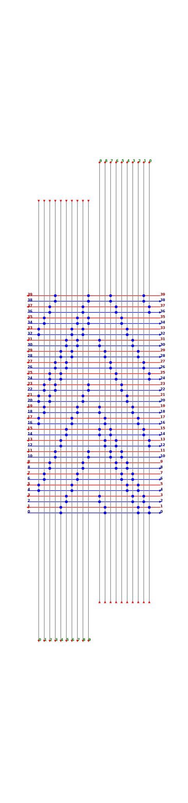
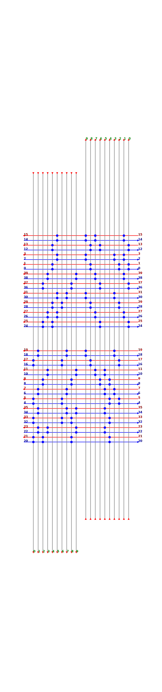
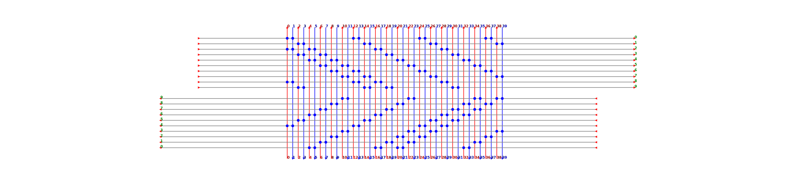
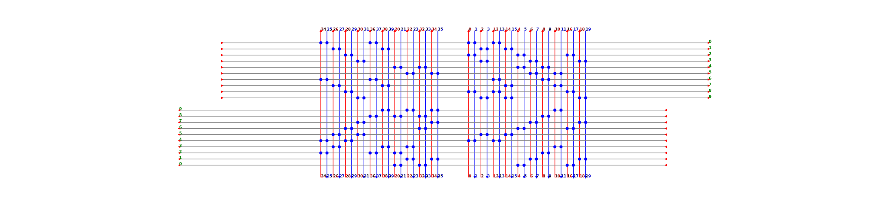

Note
Click here to download the full example code
Partition Conn Box 01¶
This example demonstrate how pre tech mapped netlist of connection box can be partition based on switch patterns.
Calculate difference beetween top and bottom switches on each channels
Sort each channel based on difference
Partition where difference crosses 0
4. In case thee are multiple point with 0 difference split them equally in both partition
Horizontal Connection Box
 {kind=link}
{kind=link}
Vertical Connection Box
 {kind=link}
{kind=link}
Out:
=========== CBY ===========
left_chan [4, 5, 6, 7, 8, 9, 10, 11, 16, 17, 18, 19, 20, 21, 22, 23, 32, 33, 34, 35]
right_chan [0, 1, 2, 3, 12, 13, 14, 15, 24, 25, 26, 27, 28, 29, 30, 31, 36, 37, 38, 39]
========================================================
INDX MUX CONNECTIONS
========================================================
0 |5 |10 |15 |20 |25 |30 |35 |
0 8 ____ll__________ll__ll__________ll______
1 8 ______ll__________ll__ll__________ll____
2 8 ________ll__________ll__ll__________ll__
3 8 __________ll__________ll__ll__________ll
4 8 ll__________ll__________ll__ll__________
5 8 __ll__________ll__________ll__ll________
6 8 ____ll__________ll__________ll__ll______
7 8 ______ll__________ll__________ll__ll____
8 8 ________ll__________ll__________ll__ll__
9 8 __________ll__________ll__________ll__ll
10 8 rr__________rr__________rr__________rr__
11 8 __rr__________rr__________rr__________rr
12 8 rr__rr__________rr__________rr__________
13 8 __rr__rr__________rr__________rr________
14 8 ____rr__rr__________rr__________rr______
15 8 ______rr__rr__________rr__________rr____
16 8 ________rr__rr__________rr__________rr__
17 8 __________rr__rr__________rr__________rr
18 8 rr__________rr__rr__________rr__________
19 8 __rr__________rr__rr__________rr________
====================================
INDX MUX CONNECTIONS
====================================
0 |5 |10 |15 |
0 8 ll__ll__ll______ll__
1 8 __ll__ll__ll______ll
2 4 ll__________ll______
3 4 __ll__________ll____
4 0 ____________________
5 0 ____________________
6 6 ____ll__ll______ll__
7 6 ______ll__ll______ll
8 6 ll__ll______ll______
9 6 __ll__ll______ll____
10 0 ____________________
11 0 ____________________
12 4 ________rr______rr__
13 4 __________rr______rr
14 8 rr__rr__rr__rr______
15 8 __rr__rr__rr__rr____
16 2 ____________rr______
17 2 ______________rr____
18 2 ________________rr__
19 2 __________________rr
====================================
INDX MUX CONNECTIONS
====================================
0 |5 |10 |15 |
0 0 ____________________
1 0 ____________________
2 4 ll______ll__________
3 4 __ll______ll________
4 8 ll__ll______ll__ll__
5 8 __ll__ll______ll__ll
6 2 ____ll______________
7 2 ______ll____________
8 2 ________ll__________
9 2 __________ll________
10 8 rr______rr__rr__rr__
11 8 __rr______rr__rr__rr
12 4 ____rr______rr______
13 4 ______rr______rr____
14 0 ____________________
15 0 ____________________
16 6 rr______rr______rr__
17 6 __rr______rr______rr
18 6 ____rr______rr__rr__
19 6 ______rr______rr__rr
=========== CBX ===========
top_chan [0, 1, 2, 3, 4, 5, 6, 7, 8, 9, 10, 11, 12, 13, 14, 15, 16, 17, 18, 19]
bottom_chan [20, 21, 22, 23, 24, 25, 26, 27, 28, 29, 30, 31, 32, 33, 34, 35, 36, 37, 38, 39]
========================================================
INDX MUX CONNECTIONS
========================================================
0 |5 |10 |15 |20 |25 |30 |35 |
0 8 tt__________tt__________tt__________tt__
1 8 __tt__________tt__________tt__________tt
2 8 tt__tt__________tt__________tt__________
3 8 __tt__tt__________tt__________tt________
4 8 ____tt__tt__________tt__________tt______
5 8 ______tt__tt__________tt__________tt____
6 8 ________tt__tt__________tt__________tt__
7 8 __________tt__tt__________tt__________tt
8 8 tt__________tt__tt__________tt__________
9 8 __tt__________tt__tt__________tt________
10 8 ____bb__________bb__bb__________bb______
11 8 ______bb__________bb__bb__________bb____
12 8 ________bb__________bb__bb__________bb__
13 8 __________bb__________bb__bb__________bb
14 8 bb__________bb__________bb__bb__________
15 8 __bb__________bb__________bb__bb________
16 8 ____bb__________bb__________bb__bb______
17 8 ______bb__________bb__________bb__bb____
18 8 ________bb__________bb__________bb__bb__
19 8 __________bb__________bb__________bb__bb
====================================
INDX MUX CONNECTIONS
====================================
0 |5 |10 |15 |
0 4 tt__tt______________
1 4 __tt__tt____________
2 6 tt______tt______tt__
3 6 __tt______tt______tt
4 4 ________tt__tt______
5 4 __________tt__tt____
6 4 ____tt______tt______
7 4 ______tt______tt____
8 6 tt__tt__________tt__
9 6 __tt__tt__________tt
10 4 ________bb______bb__
11 4 __________bb______bb
12 2 ____________bb______
13 2 ______________bb____
14 4 bb__bb______________
15 4 __bb__bb____________
16 4 ________bb______bb__
17 4 __________bb______bb
18 2 ____________bb______
19 2 ______________bb____
====================================
INDX MUX CONNECTIONS
====================================
0 |5 |10 |15 |
0 4 tt______tt__________
1 4 __tt______tt________
2 2 ____tt______________
3 2 ______tt____________
4 4 ____________tt__tt__
5 4 ______________tt__tt
6 4 tt______tt__________
7 4 __tt______tt________
8 2 ____tt______________
9 2 ______tt____________
10 4 ____________bb__bb__
11 4 ______________bb__bb
12 6 bb______bb__bb______
13 6 __bb______bb__bb____
14 4 bb__bb______________
15 4 __bb__bb____________
16 4 ____bb__________bb__
17 4 ______bb__________bb
18 6 ________bb__bb__bb__
19 6 __________bb__bb__bb
import glob
import logging
from os import path
import numpy as np
import spydrnet as sdn
from spydrnet_physical.util import RoutingRender
logger = logging.getLogger('spydrnet_logs')
sdn.enable_file_logging(LOG_LEVEL='DEBUG')
scale = 50
SPACING = 150
np.set_printoptions(linewidth=200)
def sort_input_channels(switch_mat, get_bias=False):
seq = []
# Add Channel number, diffference and boolean flag to np array
for i in range(switch_mat.shape[1]):
diff = (switch_mat[:, i] == "b").sum() + \
(switch_mat[:, i] == "r").sum() - \
(switch_mat[:, i] == "t").sum() - \
(switch_mat[:, i] == "l").sum()
seq.append((i, diff, diff > 0))
seq = sorted(seq, key=lambda x: x[1])
# Find cut locattion
cur = [e[2] for e in seq].index(True)
cur -= int([e[1] for e in seq].count(0) * 0.5)
# Extract channels
seq = [e[0] for e in seq]
if get_bias:
return (seq[:cur], seq[cur:], [e[1] for e in seq])
return (seq[:cur], seq[cur:])
def main():
proj = '../homogeneous_fabric'
for indx, sb in enumerate(glob.glob(f'{proj}/*_Verilog/routing/sb_1__1_.v')):
module = path.splitext(path.basename(sb))[0]
# This creates switch-box rendering class
sb_render = RoutingRender(module, f"{proj}/FPGA44_gsb/{module}.xml")
# Print vertical connection box (CBY) information and split
print(" =========== CBY =========== ")
sw_left = sb_render.report_ipins("left", show=False)
sw_left[sw_left == 'x'] = "l"
sw_right = sb_render.report_ipins("right", show=False)
sw_right[sw_right == 'x'] = "r"
sw = np.vstack([sw_left, sw_right])
left_chan, right_chan = sort_input_channels(sw)
print(f"left_chan {sorted(left_chan)}")
print(f"right_chan {sorted(right_chan)}")
sb_render.render_ipin(sw)
sb_render.render_ipin(sw[:, left_chan])
sb_render.render_ipin(sw[:, right_chan])
sb_render.render_switch_pattern()
sb_render.render_connection_box('left', filename="_cbx_1__1_0.svg")
sb_render.render_connection_box('top', filename="_cbx_1__2_0.svg")
def left_pinmap(x): return (left_chan +
[None, None, None, None] +
right_chan).index(x)
# Print vertical connection box (CBX) information and split
print(" =========== CBX =========== ")
sw_top = sb_render.report_ipins("top", show=False)
sw_top[sw_top == 'x'] = "t"
sw_bottom = sb_render.report_ipins("bottom", show=False)
sw_bottom[sw_bottom == 'x'] = "b"
sw = np.vstack([sw_top, sw_bottom])
top_chan, bottom_chan = sort_input_channels(sw)
print(f"top_chan {sorted(top_chan)}")
print(f"bottom_chan {sorted(bottom_chan)}")
sb_render.render_ipin(sw)
sb_render.render_ipin(sw[:, top_chan])
sb_render.render_ipin(sw[:, bottom_chan])
def top_pinmap(x): return (bottom_chan +
[None, None, None, None] +
top_chan).index(x)
sb_render.render_connection_box('left', pinmap=left_pinmap,
filename="_cbx_1__1_1.svg")
sb_render.render_connection_box('top', pinmap=top_pinmap,
filename="_cbx_1__2_1.svg")
if __name__ == "__main__":
main()
Total running time of the script: ( 0 minutes 0.172 seconds)